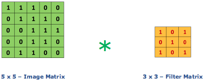
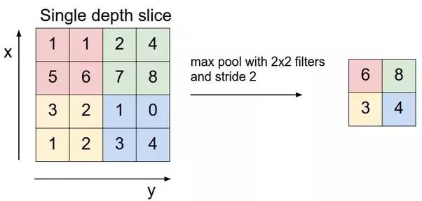

Convolution Layer
Convolution is the first layer to extract features from an input image. Convolution preserves the relationship between pixels by learning image features using small squares of input data. It is a mathematical operation that takes two inputs such as image matrix and a filter or kernal

Consider a 5 x 5 whose image pixel values are 0, 1 and filter matrix 3 x 3 as shown in below
Then the convolution of 5 x 5 image matrix multiplies with 3 x 3 filter matrix which is called “Feature Map” as output shown in below
Strides
Stride is the number of pixels shifts over the input matrix. When the stride is 1 then we move the filters to 1 pixel at a time. When the stride is 2 then we move the filters to 2 pixels at a time and so on. The below figure shows convolution would work with a stride of 2.

Padding
Sometimes filter does not fit perfectly fit the input image. We have two options:
- Pad the picture with zeros (zero-padding) so that it fits
- Drop the part of the image where the filter did not fit. This is called valid padding which keeps only valid part of the image.
Pooling layers section would reduce the number of parameters when the images are too large. Spatial pooling also called subsampling or downsampling which reduces the dimensionality of each map but retains the important information. Spatial pooling can be of different types:
- Max Pooling
- Average Pooling
- Sum Pooling
Max pooling take the largest element from the rectified feature map. Taking the largest element could also take the average pooling. Sum of all elements in the feature map call as sum pooling.
Fully Connected Layer
The layer we call as FC layer, we flattened our matrix into vector and feed it into a fully connected layer like neural network.
In the above diagram, feature map matrix will be converted as vector (x1, x2, x3, …). With the fully connected layers, we combined these features together to create a model. Finally, we have an activation function such as softmax or sigmoid to classify the outputs as cat, dog, car, truck etc.,

Summary
- Provide input image into convolution layer
- Choose parameters, apply filters with strides, padding if requires. Perform convolution on the image and apply ReLU activation to the matrix.
- Perform pooling to reduce dimensionality size
- Add as many convolutional layers until satisfied
- Flatten the output and feed into a fully connected layer (FC Layer)
- Output the class using an activation function (Logistic Regression with cost functions) and classifies images.